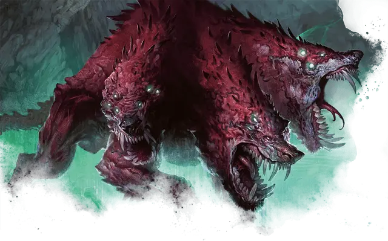

Цербер из Подземного царства
Underworld Cerberus
Большой Монстр, законно-злой

Класс Доспеха 16 (природный доспех)
Хиты 104 (11к10 + 44)
Скорость 60 футов
| мод | спас | ||
|---|---|---|---|
| СИЛ | 19 | +4 | +4 |
| ЛОВ | 12 | +1 | +1 |
| ТЕЛ | 18 | +4 | +4 |
| мод | спас | ||
|---|---|---|---|
| ИНТ | 10 | +0 | +0 |
| МДР | 16 | +3 | +3 |
| ХАР | 9 | −1 | −1 |
Навыки Атлетика +7, Восприятие +9, Скрытность +4
Иммунитет к урону некротическая энергия, огонь
Иммунитет к состояниям глухота, испуг, истощение, ослепление, очарование, ошеломление
Чувства истинное зрение 30 футов, пассивное Восприятие 19
Языки Понимает все языки, но не может говорить.
Опасность 6 (2300 опыта)
Бонус мастерства +3
Особенности
Агрессивный. Цербер может бонусным действием переместиться на расстояние, не превышающее его скорость, в сторону видимого враждебного существа.
Многоголовый. Цербера нельзя застать врасплох, и он с преимуществом совершает спасброски против потери сознания.
Тактика стаи. Цербер совершает с преимуществом броски атаки по существу, если как минимум один союзник цербера находится в пределах 5 футов от этого существа, и этот союзник дееспособен.
Действия
Мультиатака. Цербер совершает три атаки Укусом.
Укус. . Рукопашная атака оружием: +7 к попаданию, досягаемость 5 футов, одна цель. Попадание: 11 (2к6 + 4) колющего урона плюс 3 (1к6) урона огнём.
Оружие дыхания (Перезарядка 5-6). Цербер выдыхает 30-футовый конус расплавленной породы. Каждое существо в конусе должно совершить спасбросок Ловкости Сл 15, получая 21 (6к6) урона огнём при провале или половину этого урона при успешном. При провале существо также становится опутанным затвердевающим камнем. Существо может действием совершить проверку Силы (Атлетика) Сл 15, высвобождая себя или существо в пределах досягаемости из под камней в случае успеха. Камень имеет КД 17 и 10 хитов, и он обладает иммунитетом к урону огнём, ядом и психической энергии.
Описание
Трехголовые церберы обитают глубоко в Подземном царстве. Ужасающие и хитрые, они охраняют порталы между стражами Подземного царства, величайшими сокровищами Эреба и достойными внимания душами, которые могут попытаться сбежать из царства мертвых. Трехголовые церберы обычно служат демонам, но если их предоставить самим себе, они часто загоняют хитроумные души в лабиринты Преисподней, а затем охотятся на них ради развлечения.
Церберы
Церберы, которых боятся как живые, так и мертвые, патрулируют оба берега реки Тартикс. Эти многоголовые псы Подземного царства выдыхают потоки расплавленного камня, которые обжигают и заключают в плен тех, кто нарушает границы жизни и смерти. Большинство церберов испытывают безграничную жажду свежего мяса, особенно плоти гуманоидов. Известно, что злодеи использовали этот голод, заманивая церберов подальше от реки и натравливая их на поселения смертных.